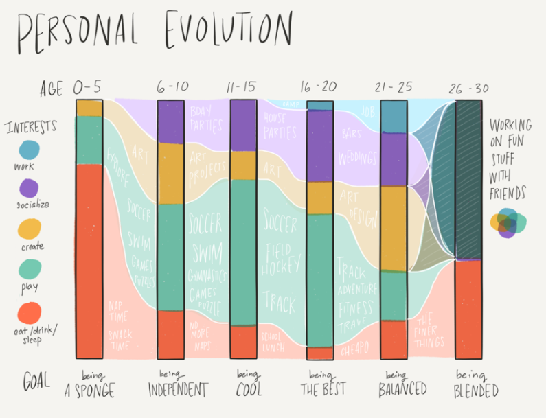

DC Women in Data + Tech
their work, stage absence, and a path forward
Kate Rabinowitz
@datalensdc
2016:No Women Single-Speakers at Major DC Tech Meetups
And Rarely at Major Multi-Speaker DC Tech Meetups

Hold on to your 'Well, actually's
Let's debunk some myths
The goal is not separate but equal
DC is fortunate to have a vibrant women in tech community. It serves an important purpose, but does not excuse the absence of women speakers at gender-neutral events.
To think otherwise is to imply that the default, the normal, is male and women can/should be regulated to separate spaces.
The industry is not an excuse

This statistic is neither relevant nor true.
There are multiple disciplines that provide valuable insight into data and tech.
This unsourced statistic likely relies on either a too-narrow definition of data science or self-reporting. Both result in an underestimation of women in the field.
And whatever your view, I think we can all agree the proportion of women in industry is not 0%.
(which is the proportion of women speakers at single speaker DC data + tech meetups)
Relying on Current Networks Doesn't Help
When your speakers and audience are disproportionately and almost uniformly male, this is not inviting to women.
As major professional organizations in the DC region, these meetup organizers have a responsibility to both reflect and encourage the diversity of the industry.
And, oh yeah, I F***ING MADE THAT LIST

Let's Fix This!
wespeaktoo.org: Breaking Down Ingrained Networks
I made the wespeaktoo.org for DC area data + tech women and non-binary individuals interested in speaking.
The website relies on self-submission. Two weeks in there are nearly 60 names.
Get on this list. Encourage others to. Make organizers use it.
Let's Create Safer Spaces
You, yes, even you,
You woke, respectful, smart,
kind, beautiful beings,
Need a Code of Conduct
Everyone Single One of Us: Let's be better!
- Be decent
- Act like there's a code of conduct even if the organizers aren't organized enough to have one.
- Elevate women and minorities in your field
- This goes two ways: letting them know their work is awesome and letting your network know their work is awesome.
- Voice your need for diversity
- Let organizers know you want more diverse speakers and spaces.
- (especially you white men)
When the Burden of Diversity Advocacy Falls on Women and Minorities, as it So Often Does, this Sets Everybody Back
So let's spend our remaining time talking about some awesome dataviz work by DC Women
(and let's note that this is an inconclusive list)
Kate Rabinowitz (@datalensdc)
Creator, DataLensDC

Alyson Hurt (@alykat) and Katie Park (@katiepark)
NPR

Brittany Fong (@bfongdata)
Tableau Ambassador
Catherine Madden (@catmule)
Design, Drawing, and Data Extraordinaire
Hannah Recht (@hannah_recht)
D3 Master
(who unfortunately just moved to NYC. y'all missed a great talk opportunity)

Jennifer A. Stark (@_JAStark)
Algorithm Breaker

Lisa Charlotte Rost (@lisacrost)
OpenNews Fellow

Marie Whittaker (@MarieCWhittaker)
Weekly DC Data Viz-zer

Rebecca Bilbro (@RebeccaBilbro)
Data Science Visualizer
Sarah Frostenson (@sfrostenson)
Vox